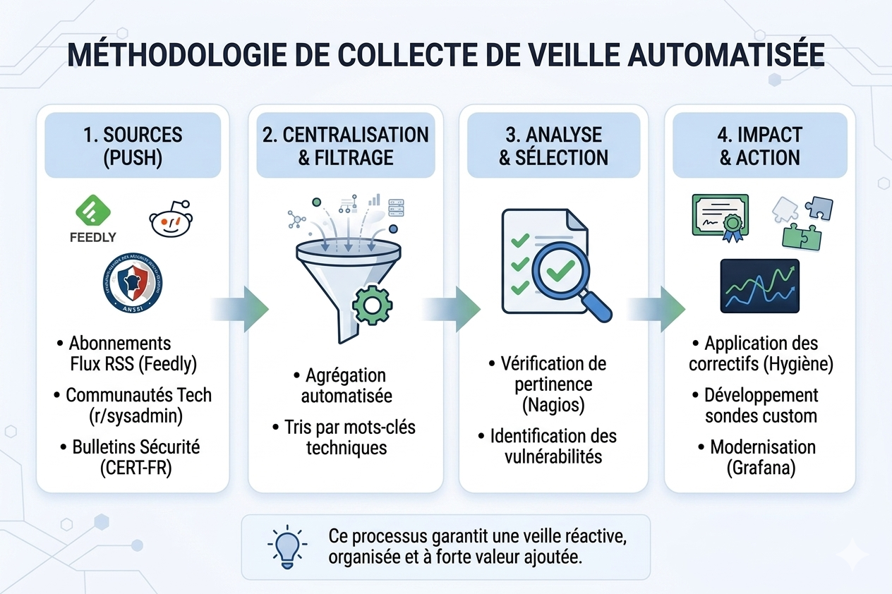
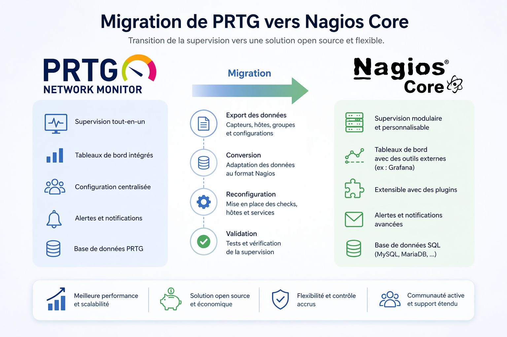
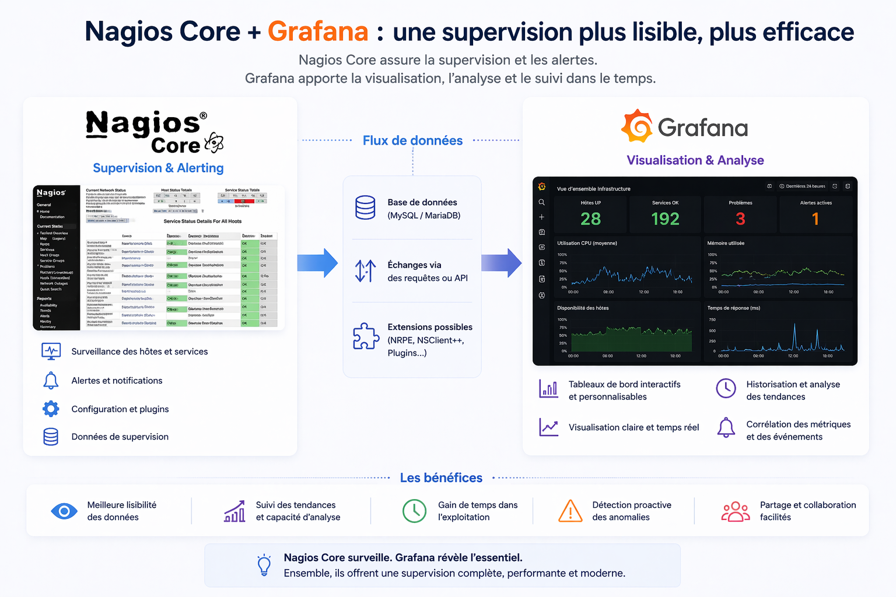
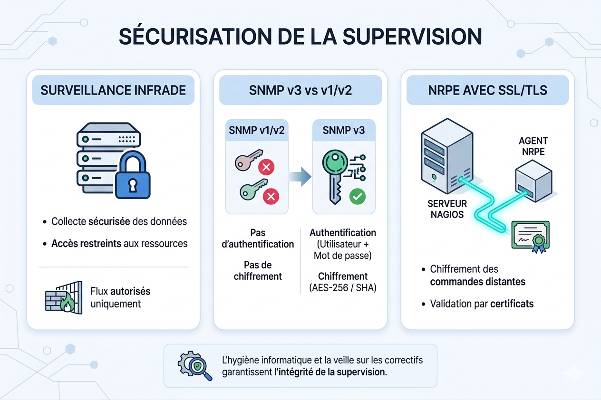

🔍 Méthodologie et Curation d'Informations
Pour assurer une veille pertinente sur Nagios et la supervision, j'ai mis en place un système de collecte automatisé :
- Agrégateurs : Flux RSS centralisés via Feedly pour les annonces de Nagios.org.
- Curation Communautaire : Surveillance des nouveaux plugins sur Nagios Exchange.
- Analyse Terrain : Suivi des retours d'expérience sur Reddit (r/sysadmin) pour les problématiques de migration.
- Sécurité : Alertes mails du CERT-FR (ANSSI) concernant les outils de monitoring.

Collecte Automatisée⚖️ Enjeux de la migration PRTG vers Nagios
La bascule vers l'Open Source répond à des besoins critiques de maîtrise du Système d'Information.
- Souveraineté : Élimination de la dépendance éditeur (Vendor Lock-in).
- Économie : ROI massif par la suppression des coûts de licence au capteur.
- Modularité : Création de sondes personnalisées en Bash et Python.

Processus de migration📈 Modernisation : L'apport de Grafana
Ma veille a mis en évidence la nécessité de moderniser l'exploitation des données récoltées par Nagios.
- Visualisation : Utilisation de Nagios comme moteur de collecte et de Grafana pour les dashboards.
- Aide à la décision : Mise en place de vues synthétiques pour la DSI.
- Métrologie : Analyse des tendances sur le long terme pour anticiper les pannes.

Apport de Grafana🛡️ Cybersécurité : Sécuriser la Surveillance
Surveiller le réseau ne doit pas créer de vulnérabilités. J'ai étudié le durcissement des flux de supervision.
- Protocole SNMPv3 : Abandon de SNMP v1/v2 au profit de la v3 (Chiffrement + Authentification).
- NRPE avec SSL : Sécurisation des agents installés sur les serveurs distants.
- Hygiène Informatique : Veille sur les correctifs de sécurité des outils de monitoring.

Sécurisation des flux de supervision📄 Dossier Complet de Veille
Retrouvez l'intégralité de mon étude technique, les analyses comparatives détaillées et les sources bibliographiques complètes au format PDF.
Accéder au PDF (Détails Techniques)